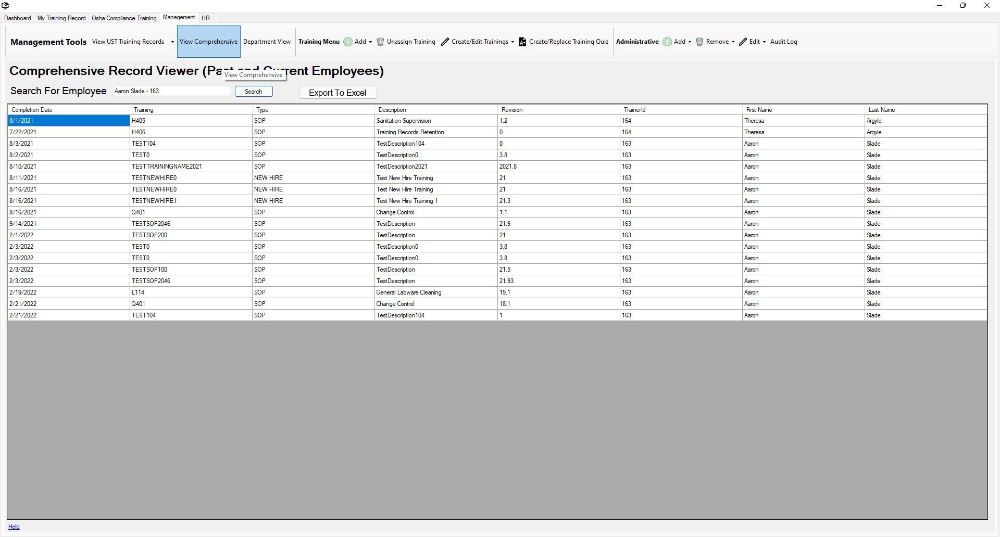

Return to Main Menu
View Comprehensive Training History
The Comprehensive Training Record Viewer page can be accessed by pressing the "View Comprehensive" button in the toolbar of the management tab.
On this page, you can view the complete training history of an employee (both current and former employees).
You also have the option to export the employee's training record to a file viewable in a spreadsheet software.

Instructions:
-
Navigate to the Comprehensive Record Viewer page.
-
Search for an employee by entering their name/information in the format seen in the auto-complete (firstname lastname - userid), and then pressing the "Search" button.